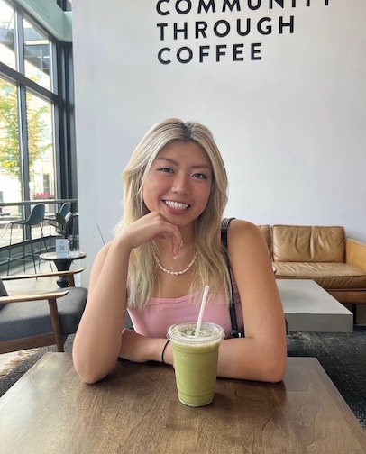

Get to know me!
I'm an ENTP who loves all things art, music, science, and UX design!

Hi, Nice to meet you! My name is Krysteen!
I am a Vietnamese American, first generation student, who was born and raised in Grand Rapids, Michigan. I am on the Pre-Health track of going into PA school, but I have a strong passion for the arts and being creative through User Experience (UX) design! I enjoy working through design processes and integrating human centered design thinking in all the work that I do! This is my portfolio of what I love doing outside of my medical studies which is coded and made with love by me to showcase my design thinking processes and the resulting final products!